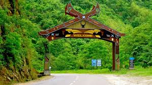

Explore Nagaland: Where Tradition Meets Tranquility Nestled in the northeastern region of India, Nagaland is a state renowned for its rich cultural heritage, stunning landscapes, and vibrant traditions. Here's an overview of what makes Nagaland a captivating destination:
Nagaland boasts lush green hills, dense forests, and pristine rivers, offering visitors a glimpse of untouched natural beauty. Explore the state's national parks and wildlife sanctuaries, such as Intanki National Park and Ntangki Wildlife Sanctuary, home to a diverse range of flora and fauna.
Marvel at the majestic Dzukou Valley, often referred to as the "Valley of Flowers," and witness the breathtaking vistas of Khonoma Green Village, surrounded by terraced fields and verdant hills.
Immerse yourself in the vibrant cultural heritage of Nagaland, where age-old traditions blend seamlessly with modern influences. Experience the colorful festivals of the state, including Hornbill Festival, Nagaland's premier cultural event, where tribal customs, music, and dance are showcased.
Witness traditional Naga ceremonies such as the Aoling Festival of the Konyak tribe and the Sekrenyi Festival of the Angami tribe, offering insights into the rich cultural traditions of Nagaland's indigenous communities.
Explore the architectural wonders of Nagaland, which reflect the state's unique blend of tradition and modernity. Visit the ancient village of Khonoma, known for its well-preserved Angami Naga architecture and historical significance in Naga resistance against British colonization.
Discover the intricate wood carvings and tribal motifs adorning traditional Naga houses, and marvel at the craftsmanship displayed in the construction of Morungs, traditional communal houses used for social gatherings and ceremonies.
Nagaland is home to several indigenous tribes, each with its own distinct culture, language, and traditions. Explore traditional villages such as Longwa and Chuchuyimlang to witness the unique way of life preserved by these communities for centuries.
Engage with local artisans and craftsmen to learn about traditional crafts such as weaving, basketry, and pottery, and support their livelihoods by purchasing authentic handmade products.
Embark on thrilling adventures amidst Nagaland's natural wonders. Trek through lush forests, explore ancient caves like Mimi Cave and Shilloi Lake Cave, or indulge in outdoor activities such as bird watching and angling.
Experience eco-tourism initiatives like the Khonoma Nature Conservation and Tragopan Sanctuary, where sustainable tourism practices promote conservation efforts while offering unique experiences to visitors.
Whether you're drawn to the rich cultural heritage, serene natural landscapes, or thrilling adventures, Nagaland offers a diverse range of experiences waiting to be explored. Plan your journey to this enchanting state and immerse yourself in the beauty and tradition of Nagaland.
